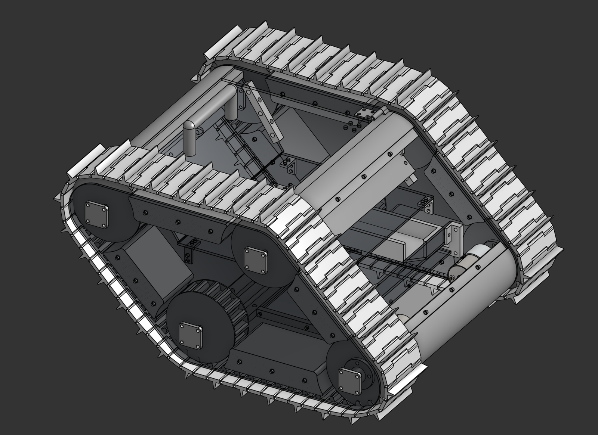
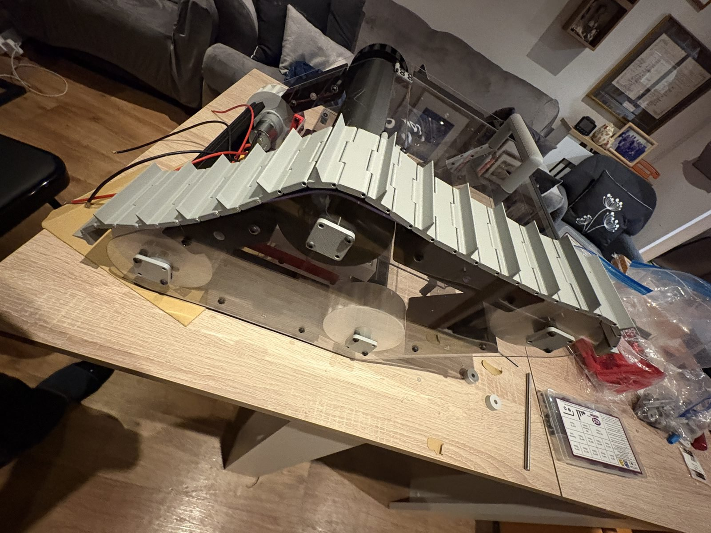
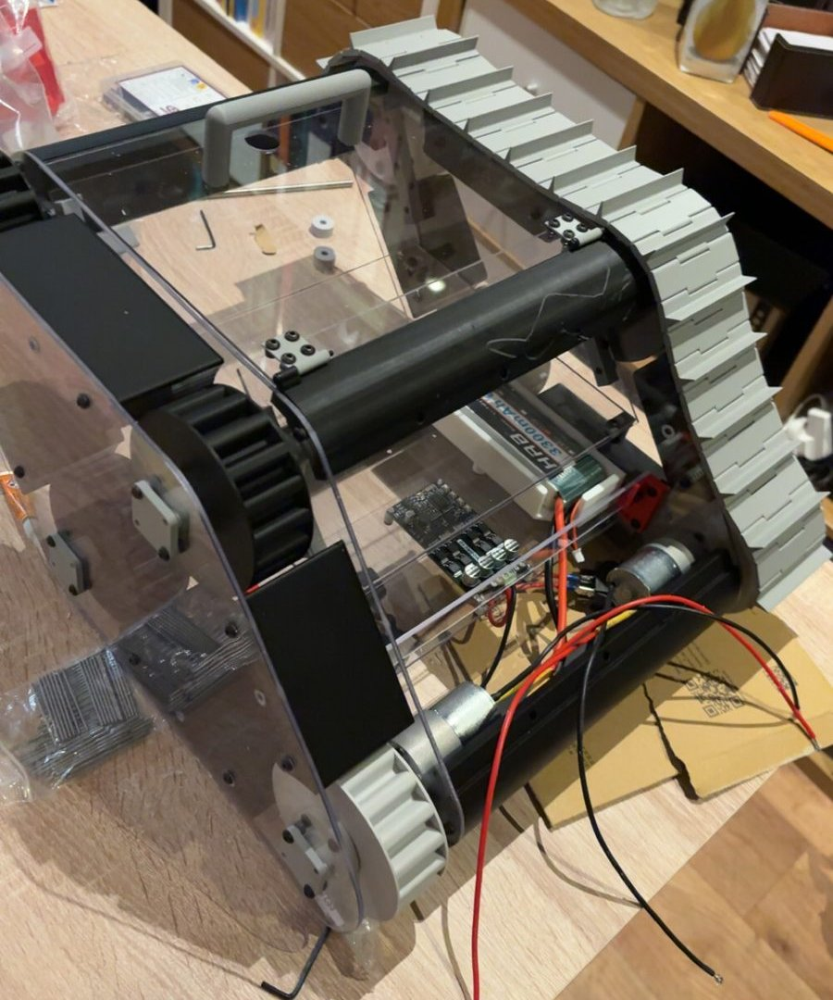
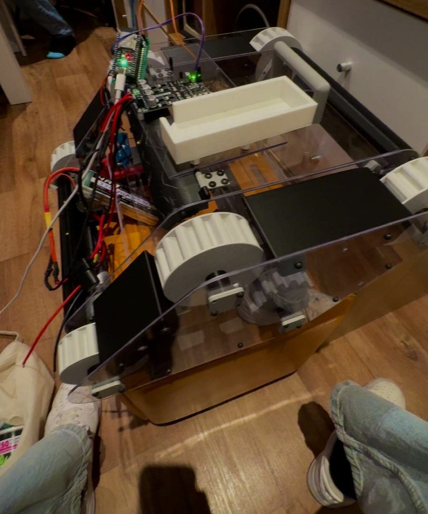
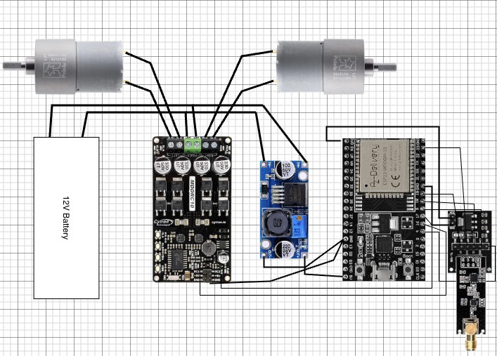
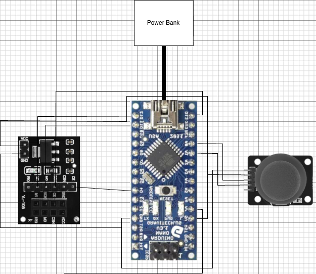
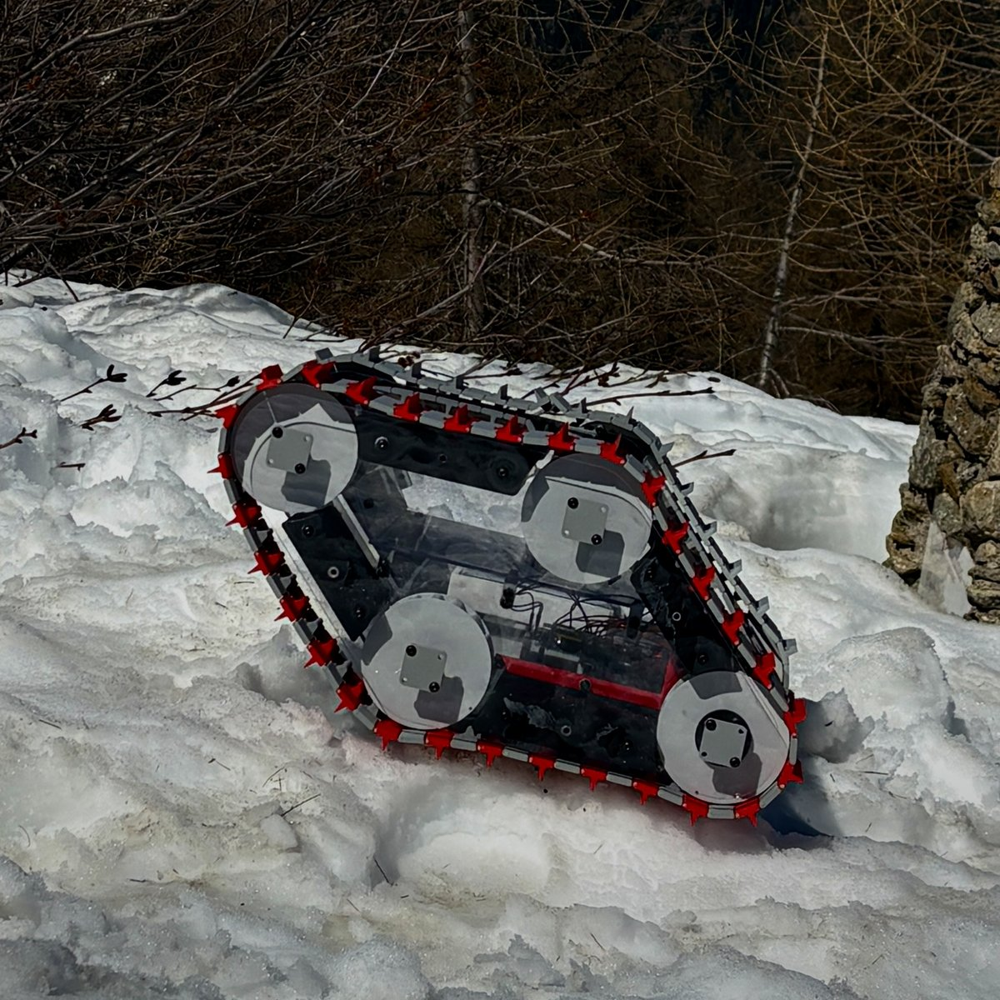
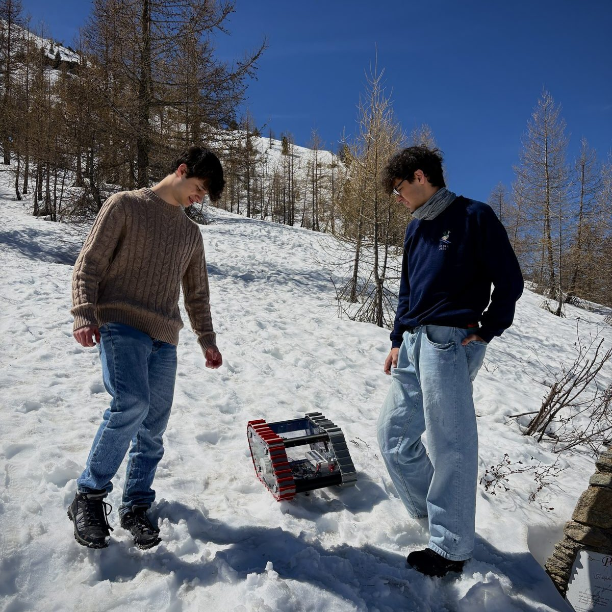
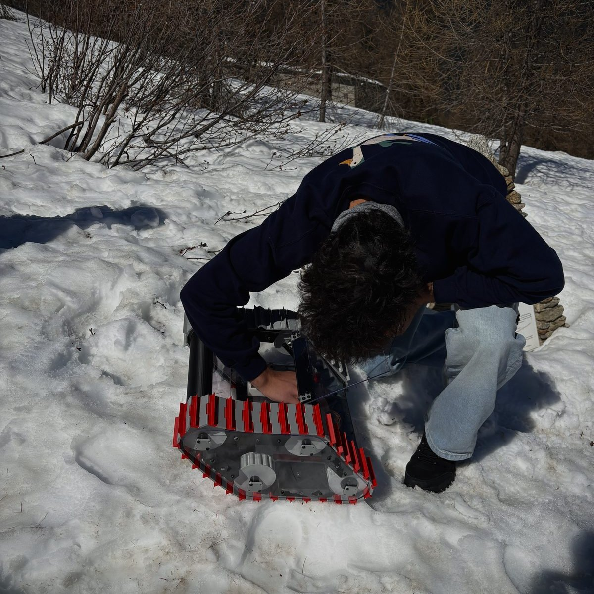

A tracked rescue robot designed to operate on snowy, unstable terrain — built around low ground pressure, robust mobility and practical field deployment.
Taken from concept to a working, field-tested prototype within the makeathon's time limit: full CAD assembly, custom drivetrain, ESP32 RF control and a snow-tested chassis.

How can a small ground robot move across soft snow without sinking, stalling, or becoming unstable? Small wheels or narrow tracks concentrate weight into high local pressure — the vehicle digs in and loses usable traction.
Our answer was a lightweight tracked platform that spreads its weight over a large contact area, driven by a high-torque drivetrain sized for resistive snow loading rather than top speed. The rover was treated as an engineering system: terrain interaction, drivetrain performance, structural layout and power architecture balanced against tight time and budget constraints.

I led the robot's design and technical build, taking it from CAD to a working tracked prototype. I designed the mechanical layout — chassis panels, track modules, custom gears, hubs and standoffs — built the electronics, and handled the wiring and code under a tight deadline.
The mechanical design was produced as a full CAD assembly and manufactured as 10 laser-cut panels and 26 unique 3D-printed parts, including custom tread tracks with an integrated plow, drive gears and hubs, and a hinged electronics enclosure designed for fast access during testing.


The rover runs a compact control and power architecture built for reliability first: an ESP32 microcontroller with an RF receiver, a motor driver stage for the dual drive motors, and battery power distribution with appropriate switching and fuse protection. Control logic is separated from motor power so brown-outs under stall load can't reset the controller.
The handheld controller is a matching ESP32 + RF transmitter build. Both were documented as wiring diagrams before assembly, and the drive code covers teleop control plus a first autonomous test mode.


The rover was tested on real snow — validating flotation, traction and the RF link in the conditions it was designed for, and earning 1st place at the CGCU Extreme Weather Makeathon.
Testing wasn't tidy: the antenna needed a field repair mid-session, which the hinged electronics enclosure made quick to reach — exactly the kind of serviceability the chassis was designed for.



Planned improvements include an optimised motor torque/speed trade-off, environmental sealing for wet and cold operation, terrain sensing for navigation, metal components in high-wear locations, and semi-autonomous waypoint-based rescue behaviour.
Full CAD, code, wiring diagrams and the bill of materials are open on GitHub:
View the full repository ↗